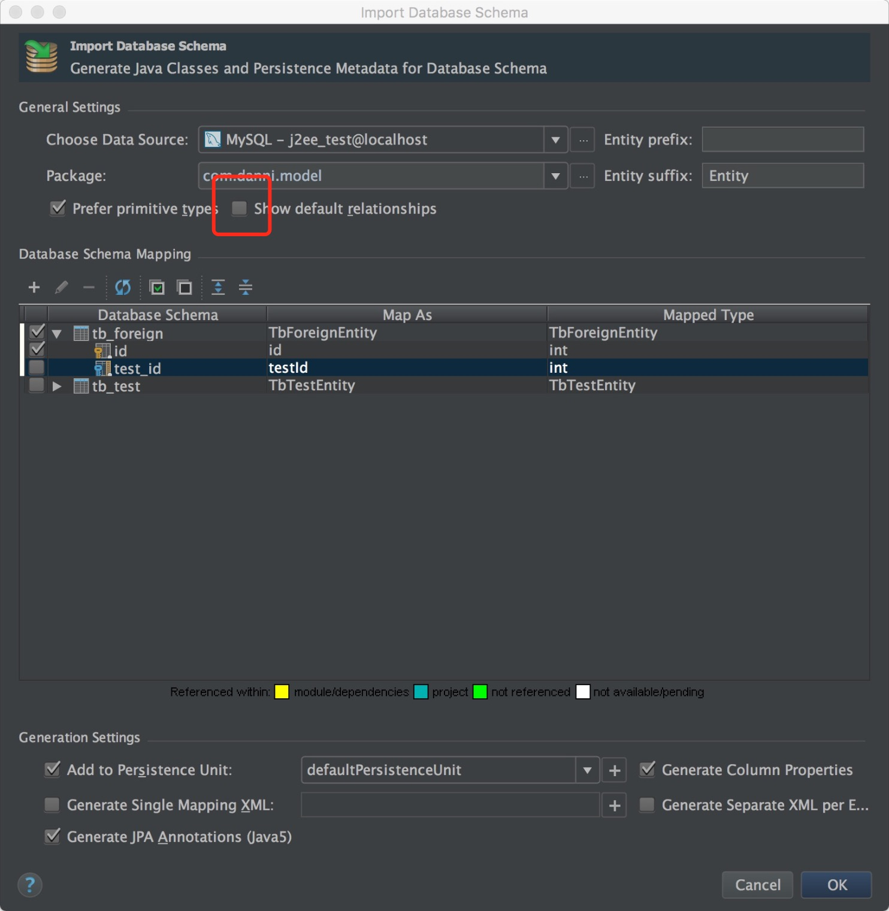
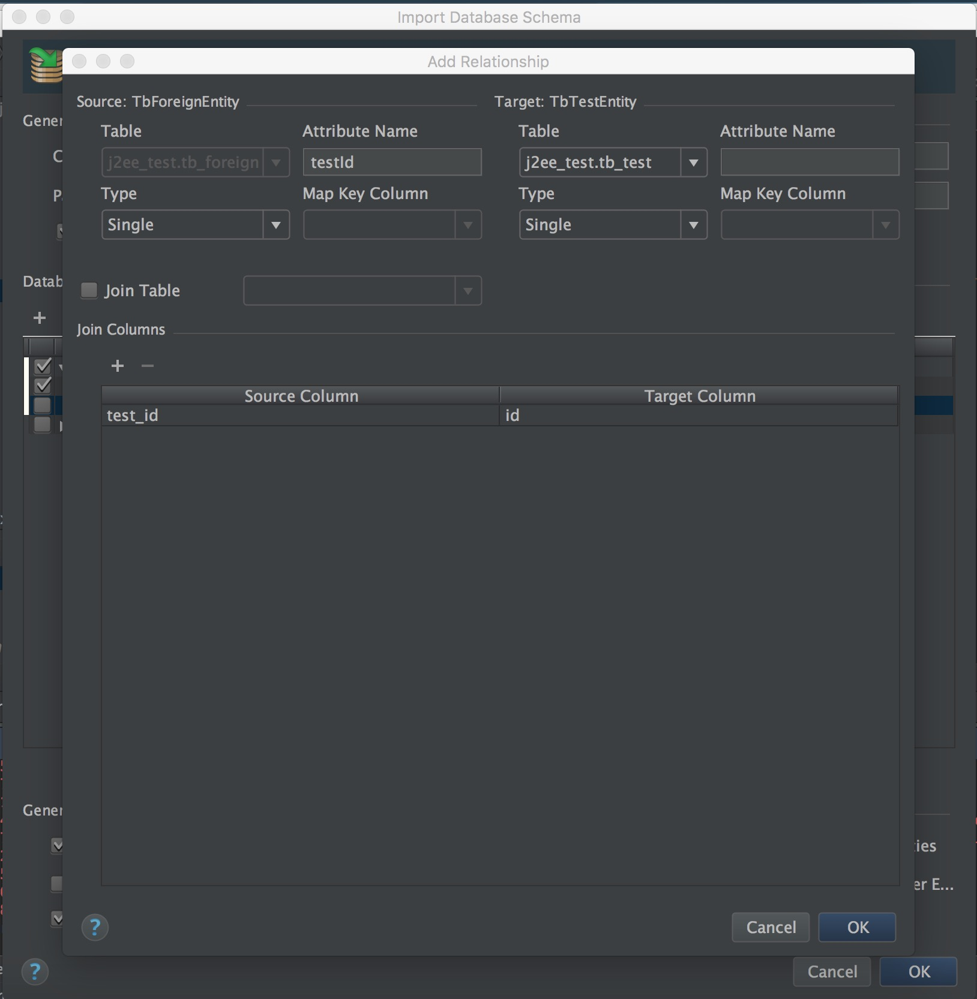

使用intellij idea启动后会报这样的错1
2
3
4
5
6
7
8
9
10
11
12
13
14
15
16
17
18
19
20
21
22
23
24
25
26
27HTTP Status 500 - Servlet.init() for servlet mvc-dispatcher threw exception
type Exception report
message Servlet.init() for servlet mvc-dispatcher threw exception
description The server encountered an internal error that prevented it from fulfilling this request.
exception
javax.servlet.ServletException: Servlet.init() for servlet mvc-dispatcher threw exception
org.apache.catalina.authenticator.AuthenticatorBase.invoke(AuthenticatorBase.java:472)
org.apache.catalina.valves.ErrorReportValve.invoke(ErrorReportValve.java:79)
org.apache.catalina.valves.AbstractAccessLogValve.invoke(AbstractAccessLogValve.java:620)
org.apache.catalina.connector.CoyoteAdapter.service(CoyoteAdapter.java:349)
org.apache.coyote.http11.Http11Processor.service(Http11Processor.java:783)
org.apache.coyote.AbstractProcessorLight.process(AbstractProcessorLight.java:66)
org.apache.coyote.AbstractProtocol$ConnectionHandler.process(AbstractProtocol.java:745)
org.apache.tomcat.util.net.NioEndpoint$SocketProcessor.doRun(NioEndpoint.java:1455)
org.apache.tomcat.util.net.SocketProcessorBase.run(SocketProcessorBase.java:49)
java.util.concurrent.ThreadPoolExecutor.runWorker(ThreadPoolExecutor.java:1142)
java.util.concurrent.ThreadPoolExecutor$Worker.run(ThreadPoolExecutor.java:617)
org.apache.tomcat.util.threads.TaskThread$WrappingRunnable.run(TaskThread.java:61)
java.lang.Thread.run(Thread.java:745)
root cause
org.springframework.beans.factory.BeanCreationException: Error creating bean with name 'jpaMappingContext': Invocation of init method failed; nested exception is org.springframework.beans.factory.BeanCreationException: Error creating bean with name 'entityManagerFactory' defined in ServletContext resource [/WEB-INF/mvc-dispatcher-servlet.xml]: Invocation of init method failed; nested exception is......
解决：
导入数据库表时外键手动加，不用自动生成的。
第一次点了这里用了自动生成的就报错了

手动添加
